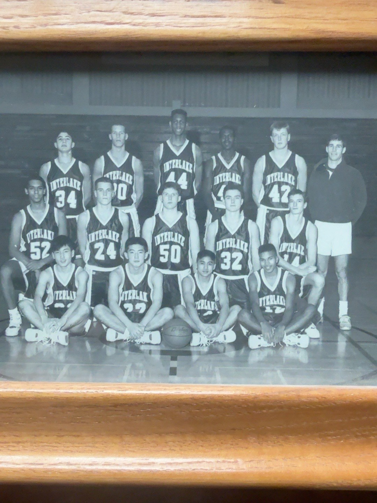

Interlake High School • 1990–1992
Interlake Basketball, 1990–1992
Matt played for coach Jeff Bright during Interlake’s dramatic 1990–91 turnaround from 3–17 the previous season to 17–8. He received honorable mention All-KingCo recognition as a junior and was named team MVP in 1991–92. His preserved senior scoring sheet records 403 points in 25 games.
Notable games and memories
- 1990–91 — Mercer Island: 19 points in an 85–82 upset, including 11 in the fourth quarter
- March 1992 — Cascade: 40 points, seven three-pointers, 13 rebounds and five steals in an overtime playoff loss
- 1991–92 — Southern California Estancia tournament: December 26, 1991: 30 points in a 66–58 triple-overtime win over Newport Harbor; December 27: 25 points and four three-pointers in a 69–58 loss to Estancia. Original clippings preserved in the archive
Browse original newspaper clippings ↗
Original photographs and playoff clippings



This is a family historical archive based on original clippings, preserved statistics, and personal recollections. Not an official school record book.